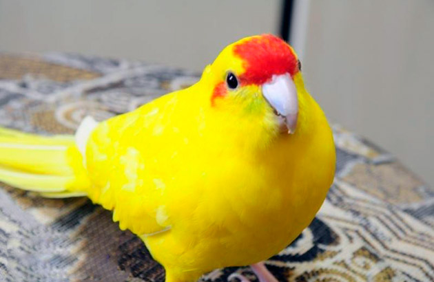

попугай какарик
Kākāriki karaka, или оранжеволобый попугай , — это небольшие лесные птицы с оранжевой полосой над клювом. Это наш самый редкий попугай, в дикой природе осталось всего несколько сотен птиц. какарик очень милый. я его видела в папугайне
